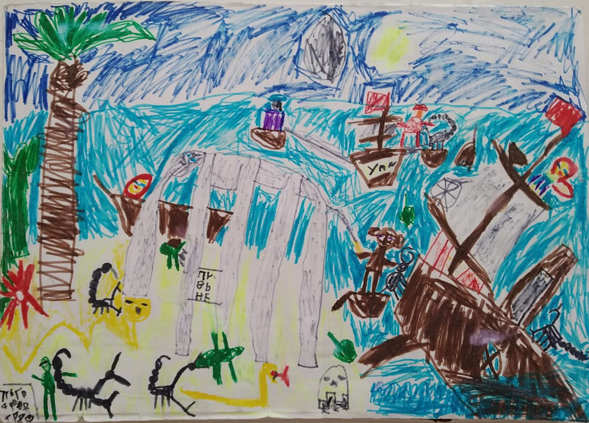

Александр Клименко (7 лет)
Матросы-искатели приключений

Книга первая - В африканской деревне
Глава первая
Начало рейса
В тот день была суматоха. Начинался рейс "Победы". Все очень
волновались, что корабль не успеет отчалить до бури. Но моряки были
спокойны, так как могли переплыть любой шторм. Капитан отдал команду.
Поднялся якорь, распрямились паруса. Корабль отчалил, он плыл так
быстро, как не мог бегать леопард!
Капитан сказал: "Буря!". Матросы забегали, пытаясь спасти корабль. Их
несло куда-то далеко. Компас завертелся.
Глава вторая
В Тихом океане
Волны были все больше и больше. Но матросы все равно не боялись. Потом
волны и гроза стихли и капитан закричал: "Мы в Тихом океане!". Корабль
стал плыть быстрее и быстрее. Штурман, смотря в подзорную трубу,
закричал "Земля!". В стекле подзорной трубы завиднелся зеленый огонек.
И этот огонек стал делаться все больше и больше. И они приплыли в
Африку.
Глава третья
Затонувший корабль
Матросы вышли на берег. Штурман тоже хотел выйти, но капитан его
остановил. "Нет, нет, кто-то должен следить за кораблем. Могут пройти
африканские воры". Штурман хотел возразить, но это же капитан.
Перед высадившимися на берег матросами была пустыня. Матросы пошли
вперед и скоро они увидели маленький домик. Там жила старушка. Они
вошли в дом и попросились на ночлег. Старушка впустила. Они легли в
кровати. Матросы уснули. Штурман тоже лег спать.
Ночью был шторм. Корабль пошел ко дну. Штурман проснулся и побежал к
штурвалу, но уже было поздно. Он дотянулся до штурвала, попытался
управлять, но его потянуло ко дну. Штурман погиб. Матросы проснулись.
Они пошли к кораблю. Когда они пришли, то не поверили свои глазам.
Матросы увидели не свой корабль, а лишь одни обломки от лодок и кусок
борта затонувшего корабля.
Глава четвертая
Сон на дереве
Вся команда корабля, кроме утонувшего штурмана, отправилась в джунгли.
Скоро день кончился. Скоро настал вечер. Они все шли и шли. Матросы
устали, Но капитан сказал: "Мы не должны останавливаться до того как
не придем в африканскую деревню". Они прошли еще несколько километров
и капитан сказал: "Ну ладно, вы можете поспать, только если не будете
меня отвлекать от карты". Матросы влезли на первое попавшееся дерево.
Капитан тоже влез. Один матрос сказал: "Давайте еще немножко пройдем,
чтобы капитан тоже поспал". У одного матроса оказалась хлопушка. И
капитан решил продолжить идти дальше. Они пошли дальше. Капитан тоже
устал. Он влез на первый попавшийся баобаб. Матросы спросили: "А
почему Вы там?". "Мне же нужен сон" - сказал капитан. Матросы тоже
полезли на дерево
Ночь была тихой. Ничего не происходило. Но эта замечательная ночь
скоро прошла, как и прошлая. Наступило утро.
Глава пятая
Встреча с зеленой мамбой
Матросы проснулись. Они хотели уйти, но вдруг один матрос закричал:
"Змея!". Они осмотрелись и тоже увидели змею.
Змейка сказала: "Нежданные гости пойдут мне на обед"
У одного матроса оказался нож. Матрос, найдя свой небольшой кинжал, не
мешкая, отрезал змее голову. Матросы решили наточить лук. И они смогли
наточить. Матросы наточили лук. Никто из матросов не знал, что будет
дальше.
Глава шестая
Атака львиц
Матросы шли вперед. Один из них увидел какую-то желтую мордашку в
траве. Он не придал этому значения. Матросы еще немножко прошли. Вдруг
тот же самый матрос, который заколол мамбу, увидел льва.
Но тот матрос уже обратил на это внимание и закричал: "На нас напали
львицы!". Он взял свой кинжал, который еще не отчистил от крови мамбы.
А капитан взял свой лук из зеленой мамбы. Они постарались сбить львиц,
но у них ничего не получилось. Капитан уже собрался наутек, но тот
добрый матрос, который захотел, чтобы капитан тоже поспал, погладил
львицу. Львица успокоилась. Матросы приручили так всех львиц. И львицы
пошли с ними преодолевать будущие препятствия.
Глава седьмая
Пирамида с мумией
Матросы шли до утра. И вдруг увидели пирамиду. Они хотели обойти ее,
но поняли, что так будут идти аж до утра. И они попытались пройти
через пирамиду, но не увидели вход. Тогда они попытались сдвинуть
кусочек пирамиды. Матросы его сдвинули и вошли внутрь, немножко
прошли, но вдруг поняли, что заблудились. И они пошли еще дальше. И
вдруг капитан случайно налег на стенку. Матросы неожиданно провалились
вниз. Они прошли еще немножко. Перед ними оказалось много богатства,
прям видимо-невидимо. Матросы продвинулись вперед, даже не замечая,
что за ними кто-то следит.
И вдруг на них кто-то напал. Они оглянулись и увидели человека,
который замотан. Перед ними стоял фараон. Матросы ударили его, он он
не отреагировал. И они бросились бежать. А фараон бежит за ними. Они
увидели какой-то ключ. Потом они увидели ворота.
Один матрос понял, что этот ключ этот от ворот. И он взял этот ключ и
толкнул ворота. Матросы вбежали в ворота. И они оторвались от этой
мумии. Матросы побежали дальше, а там богатства еще больше.
Матросы увидели каких-то чудовищ. Матросы начали с ними драться. Но
они никак не могли победить. И они не могли поверить своей удаче, но
их снова спас тот ключ. Один матрос воткнул в одного из чудовищ, и в
тот же миг исчезли все чудовища. Матросы прошли и вышли на свет. И
только они вошли на платформу как в тот же миг платформа двинулась
обратно в пирамиду. Матрос, у которого был ключ, повернул его
несколько раз. И раз - платформа вся выдвинулась. И потом оказалось,
что сама эта пирамида была раньше хорошим садом. И только когда один
фараон умер - владелец того сада, этот сад решили закрыть и отстроить
как пирамиду. И эту пирамиду закрыли. Матросы узнали об этом прочитав
надпись на одной из досок. Там же была и дата, когда этот сад закрыли.
Глава восьмая
Дорога в деревню (часть 1)
Матросы открыли сад. Потом они пошли все дальше и дальше. Они шли, шли
и шли, и вдруг дошли до реки. Матросы не знали, как им дальше быть. И
один из них спросил: "Как долго мы еще будем идти?" "Долго" - сказал
один из матросов.
Одна львица вдруг прыгнула в воду и поплыла. Вторая последовала за
ней. Третья, четвертая, пятая - и вот все львицы оказались в воде и
плыли к противоположному берегу. И они долго плыли. Матросы на берегу
пообедали. Собирались идти дальше, но они оказались на острове. Львицы
снова их выручили. Они доставили их на другой берег. Но вдруг пошел
дождь. Он шел семь дней. И вот наконец-то перестал. Но вдруг поднялись
волны. Матросы побежали.
Глава девятая
Дорога в деревню (часть 2)
Матросы прошли еще немного и перед ними была гора. Они хотели обойти
ее как пирамиду, но она была еще больше, чем пирамида. И они пошли
наверх. И они карабкались очень-очень долго. И вот они добрались до
вершины. И один матрос вдруг закричал: "Деревня!" Другие матросы тоже
осмотрелись и тоже закричали: "Деревня!" Они не знали, как спуститься.
Один матрос прям на попе спустился и прямо в деревню. Матросы все
сделали точно также. И вот они пришли в деревню.
Книга вторая - В африканской деревне
Глава первая
Первые лианы
Матросы пошли в джунгли и увидели там скорпиона. Что делать? Матросы
решили пойти по лианам. Они прицепились к лиане все вместе. И лиана не
оборвалась даже. Они раскачали лиану и перепрыгнули на другую лиану. И
так до тех пор пока скорпион от них не отстал. Но эта лиана была
маленькая. А дерево было большое. Что делать? Они точно также
поступали и с этой лианой. Но следующий был листик, а не лиана. И
матросы упали на землю. Хорошо, что львицы их подхватили: львицы,
которых они забрали 2 недели назад. И они пошли дальше.
Глава вторая
Самые большие цветки в мире
Матросы еще немножко прошли и увидели большие пребольшие цветки. Одна
львица наступила в такой цветок и взвыла от боли, и сошла с поля тех
цветков. Матросы и львицы решили обойти это поле. А поле было больше,
чем пирамида и гора. Тогда они решили вырубить это поле. И они его
вырубили. Но сколько бы они цветков не вырубали, поле не
заканчивалось. Но проблема решилась быстро. Приползла королевская
кобра и хотела укусить одного из матросов. Но один из матросов взял
свой нож и проткнул королевскую кобру. Конечно же из нее нельзя было
сделать лук, но мясо получилось отличное. Прошло три дня, а мясо до
сих пор не закончилось. Тогда они решили бросить есть это мясо.
Глава третья
Быстрый гепард
Матросы вдруг услышали позади рычание. Они оглянулись и увидели
гепарда. Они решили приручить его, но он был очень быстр. И они даже
не смогли его тронуть. Гепард хотел уже бить своей лапой. Но вдруг
какой-то африканский охотник застрелил гепарда. Матросы сняли с
гепарда шкуру и отдали ее охотнику. Они попробовали мясо. Такого мяса
они никогда не пробовали, они ели его всего лишь три дня.
Глава четвертая
Река
Матросы прошли немножко и увидели озеро и они хотели его обойти, но
оно было как пирамида, гора и цветки вместе взятые. Они собрались
поплыть по озеру. И только они поплыли по озеру на львицах, как озеро
тут же начало бушевать. Сначала их унесло потоком, и скоро они увидели
другой берег. Оказывается их перенесло течением. И они пошли дальше.
Глава пятая
Встреча со скорпионом
Матросы прошли после того случая с рекой еще немного и увидели
скорпиона. Он был черный с толстыми клешнями. Самый умный матрос
догадался, что это императорский скорпион. Матрос попросил того
матроса, у которого был кинжал, заколоть скорпиона. И тот заколол
скорпиона. Они достали мясо скорпиона. А из панциря сделали крепкий
наконечник для стрелы. А мясо они поели. Но мясо у него было как у
рака.
Глава шестая
Пропасть (обрыв)
Матросы прошли еще немного после того случая со скорпионом. Один
матрос шел, шел не подозревая ни о чем. И упал. Другие матросы не
пошли туда. Они взяли большую веревку, привязали ее к кинжалу, который
воткнули в землю. После этого матросы прыгнули в пропасть, держась за
веревку. Мостик только показался, но кинжал поехал. И они тоже поехали
вниз. Мостик стал становиться все больше и больше. И в итоге стал
большим мостом. И они приземлились на него, и внизу увидели снежных
барсов. Матросы решили покушать их мясо. Львицы тоже хотели. И они
скинули кинжал в одного снежного барса. И все снежные барсы сразу
прыгнули на тот мост из пропасти.
И была большая битва. То снежные барсы выигрывали немножко, то матросы
выигрывали немножко. И так битва продолжалась очень долго.
У матросов появился один шанс победить. Когда барсы увидели львиц.
Матросы взяли кинжал и кинули во всех сразу, и убили всех. А мясо
когда они съели их, было лучше чем у гепарда.
Выбрались они быстро. Матросы взяли кинжал и кинули, и попали в скалу.
Взобрались на утесы. И снова кинули кинжал. И попали уже в землю. Они
взобрались.
Глава седьмая
Гудок
Часть первая
Крутая скала
Матросы прошли немножко и услышали небольшой гудок. И вспомнили как
они были давно, аж пол года назад, в Англии. И побежали. И увидели
огромную скалу. И услышали голос: "Успели доставить записку?" Они
встали на утес с большим трудом. А на нем перекусили и поспали. А
когда проснулись, узнали что уже закат. И они поспешили посмотреть на
него. И они начали восхищаться небом. Матросы сказали: "Жалко, что мы
не успели на тот звонок". И они спали на скалах.
Часть вторая
Прибавление
Матросы проснулись и услышали звонок. И они поспешили на его звук. Но
перед ними оказался лев. И они поступили также как поступили с
львицами. Они его погладили. А вся стая последовала за ним. Матросы
долго давали имена львицами и льву и не успели на корабль.
Глава восьмая
Новый корабль
Матросы прошли немножко и увидели корабль под названием "Удача". Они
поднялись на корабль и увидели там записку, в которой говорилось
"Возьмите "Удачу" и плывите куда хотите. Мы погибли во время шторма".
Матросы так и сделали. Добрый матрос был назначен новым штурманом.
Матросы, лев и львицы отчалили от берегов Африки.
Книга третья - Дорога домой
Глава первая
Встреча с акулой
Корабль поплыл. Капитану даже понравилось как он плыл. Корабль проплыл
немножко. И вдруг - "Трах!". Матросы услышали еще: "Та-ра-рах!". Они
посмотрели вниз и увидели там акулу. Оказалось, что она бьет об
"Удачу". Матросы поспешили убрать акулу. Одна львица и лев прыгнули в
воду, и через несколько минут притащили акулу. Матросы похвалили и
погладили львиц.
Они разделали акулу, мясо было тоже вкусное, можно сказать, как у рыб.
Глава вторая
Удар в "Удачу"
Матросы проплыли немножко после того случая с акулой. И вдруг:
"Трах!". Матросы выбежали на палубу.
Один матрос прыгнул в воду и нырнул в глубину. И он увидел, что в
"Удаче" есть дырка. Матрос поспешил к другим и попросил молоток с
гвоздями. Потом они хотели спросить, что произошло, но он уже нырнул в
воду. Матросы почувствовали, как корабль тонет. Матрос заколотил
дырку. И корабль перестал тонуть. Матрос всплыл на поверхность еле
живой. Его тут же начали обогревать. Его даже признали героем.
Глава третья
Затонувшие корабли
Матросы проплыли так еще немного и увидели целое полчище затонувших
кораблей. Каких там только не было кораблей. Матросы решили
просмотреть что там на кораблях. Они достали лебедку, а зацепили за
один корабль. И они услышали: "Трх-трх-трух!" Когда корабль достали
все равно он был завален костями. А некоторые кости ушли на дно.
Матросы так достали очень много кораблей. И они достали последний
корабль на поверхность воды.
Один корабль они исследовали и оставался последний шкафчик. Когда они
открыли этот шкафчик, там ничего не было кроме одной маленькой
бумажечки. В этой бумажке было написано: "Англия. Россия". И матросы
вспомнили одних матросов, которые плыли из Англии в Россию. И только
после этого они стали матросами. Их корабль назывался "Победа". Он был
гоночный. И матросы поплыли дальше в надежде, что потом они не увидят
ни один затонувший корабль.
Глава четвертая
Водопад
Матросы поплыли. И их понесло к двум скалам. Они вначале даже не
догадывались куда их несет. Но потом они увидели, что это водопад. Они
попытались развернуть корабль. Но течение было сильным. Матросам
оставалось только одно: спрыгнуть на скалы, но они не успели. И их
корабль понесло вниз. Матросы потеряли сознание. Их разбудило:
"Гр-Кр-Кр!" Они тут же проснулись и осмотрели весь корабль. И они
увидели ветку. Это она сломалась и разбудила их. Матросы поплыли
другой дорогой в Англию
Глава пятая
Догонялки с пираньями
Матросы поплыли, но они не знали, что они в Америке. И вдруг они
услышали: "Трк!". Потом еще: "Трк!". Они посмотрели и оказалось, что
они в Америке. Они посмотрели назад и увидели пираний. Оказалось, что
они в Южной Америке.
Матросы плыли, а пираньи за ними. И так было, как игра в догонялки,
очень-очень долго пока море не стало холодать. И они так приплыли в
Северную Америку. И пираньи стали отставать от корабля.
Глава шестая
Европа, встречай нас
Матросы поплыли в Европу через Атлантический океан. Плыли они пять
дней. А на шестой они увидели землю. Это была Европа. Но до нее
оставалось плыть еще целый день. Матросы подумали: "Ну, ночью,
наверное, не будет шторма". Но ночью был шторм. Волны были как горы. И
только если бы не одна скала, они бы погибли. Она разрубила самую
большую волну, и от нее остались лишь одни брызги. Брызг было тоже
много. Скалу эту матросы обошли. А наутро они уже были в Европе.
Глава седьмая
Англия, встречай нас
Матросы плыли восемнадцать дней без ничего: без приключений. Они
увидели Англию. Но до нее оставалось еще 3 дня. На следующий день
образовался новый шторм. Волны были как горы. Шторм длился целый день.
На третий день было солнце. Наконец на четвертый день матросы приплыли
в Англию.
Книга четвертая - Снова в Англии
Глава первая
Покупка мандаринов
Матросам захотелось мандаринов. Матросы искали на каждом дереве,
обыскали весь город, но так и не нашли ни одного мандаринового дерева.
Матросы сказали: "Нет, так дело не пойдет!" Они решили спросить, где
достать мандарины. Им сказали: "В магазине продуктов". Когда матросы
увидели написано "Магазин" они сразу побежали в магазин. Они искали
везде, но нашли только посуду и мебель. Они спросили: "Почему здесь
нет мандаринов?" Работник магазина сказал: "А здесь их не бывает!
Бывают они только в магазине "Продукты". А это антикварный магазин, а
не магазин продуктов". Матросы пошли в другой магазин под названием
"Супермаркет". Там они искали очень долго и наконец нашли мандарины.
Они пошли на кассу. Оказалось, что мандарины купить так просто нельзя.
Продавец сказал: "С вас 20 копеек". Матросы вспомнили, что им что-то
дали за это путешествие. И они дали одну вот эту штуку. Продавец
сказал: "С вас еще 10". Удивленные матросы дали еще. Продавец сказал:
"Покупайте. Не выкидывайте чек". "А что это - чек?" - спросили
матросы. "Это вот эта бумажка" - ответил продавец.
Матросов было ровно 30, мандаринов было 80. И всем достались свои
мандарины. И каждый понес к себе домой свою долю мандаринов.
Глава вторая
Неизвестный корабль
Матросы должны были поплыть на корабле и сделать двухчасовую прогулку.
Но когда они увидели корабль им показалось, что это был корабль
другого века. Они спросили у экскурсовода: "А что это за корабль?" Он
сказал, что корабль экскурсии самый обыкновенный теплоход. А матросы
спросили: "Что такое теплоход?". Экскурсовод сказал: "Это обычный
корабль на топливе и электричестве".
А когда матросы зашли внутрь, им так не показалось. Они дернули за
рычаг и корабль как рванет. Матросы спустили рычаг вниз и корабль
остановился. Матросы повернув чуть-чуть дальше, корабль поплыл
нормально. И экскурсовод начал проводить экскурсию. Но вдруг пошел
дождь. Матросы не знали как опустить крышу. А все люди и экскурсовод
сбежали вниз в какую-то каюту. Как повернуть корабль матросы не знали,
скоро они увидели огромную скалу.
Один матрос увидел какую-то круглую штуку и повернул ее, и корабль
тоже повернулся. А потом случайно корабль разбило. Матросы и люди
спустились в лодки. Люди повернули один рычаг сзади и тут же поплыли.
Матросы сделали также и очень-очень быстро поплыли. Но матросы не
знали как это выключить, не знали как остановиться. И они отпустили
этот рычаг и остановились. Матросы снова взялись за рычаг и не
отпускали его пока не приплыли к пристани. Когда они приплыли к
пристани, было темно. Когда они уже столкнулись с пристанью, они тут
же вылетели на пристань. После такого приключения матросы были не
готовы к другим приключениям.
Глава третья
Конь на колесах
Что-то быстро промчалось на колесах. Матросы быстро побежали за этим,
чтобы узнать что это такое. Но не догнали. Потом они увидели другую
клетчатую машину. Она остановилась, и шофер спросил: "Вас куда-нибудь
подвести?" Матросы сказали: "Да нет, не надо". Но до дома им
оставалось много. "Ну ладно, довезите нас до нашей мостовой" - сказали
матросы. Шофер сказал: "Проезд 40 копеек". Матросы сели и только когда
они пристегнули ремни, шофер завел мотор. Матросы поехали, как только
над ними вспыхнул красный свет, шофер остановился и сказал: "Вам куда,
налево, направо или прямо?" Матросы сказали: "Направо!" Шофер что-то
повернул и машина снова поехала. Потом матросы сказали: "Нам прямо!" И
так матросы проехали очень долго. И вот их улица. И матросы сказали
шоферу: "Стойте! Мы уже приехали!" Шофер сказал: "Вначале платите
деньги. Потом я остановлюсь!" Матросы заплатили, и шофер остановился.
Матросы спросили: "А что это такое?" Шофер сказал: "Автомобиль".
Глава четвертая
Голубой переполох
Матросы пошли на свое задание и вдруг увидели какое-то голубое пятно.
И это пятнышко не пустило их. И они вспомнили как неделю назад играли
в догонялки с пираньями. И это голубое пятно это и показывало. Оно
показывало только 10 секунд и прекратило. Но потом матросы вспомнили
какое-то дерево, в котором было дупло и голубые огоньки.
Матросы знали о дереве воспоминаний, которое было в Америке. И они
поняли, что это дерево и было деревом воспоминаний. Но жалели они о
том, что не попробовали в это дерево воспоминаний зайти, недолго.
Но потом их что-то потянуло в Южную Америку. И матросы приплыли в
Южную Америку. И они зашли в это дерево. Матросов потянуло вниз. И они
пошли дальше. И скоро они увидели, что это дерево здесь было со времен
первых людей. И только потом матросы поняли, что это дерево не
простое, а волшебное. И через 23 дня матросы были уже в Англии.
Глава пятая
Как матросы стали матросами
Путь у матросов был недолгий. Они отжимались, учились делать узлы,
учились всему. В тот день когда они поплыли на их корабле, у них
случилось маленькое несчастье. У них выпал винт. Если бы он не выпал,
корабль выстоял бы в том шторме и они вернулись бы вовремя, и штурман
бы не погиб. И вообще матросы могли бы многое сделать. Матросы все
равно справились со всеми трудностями и приплыли в Англию, в свой
родной дом.